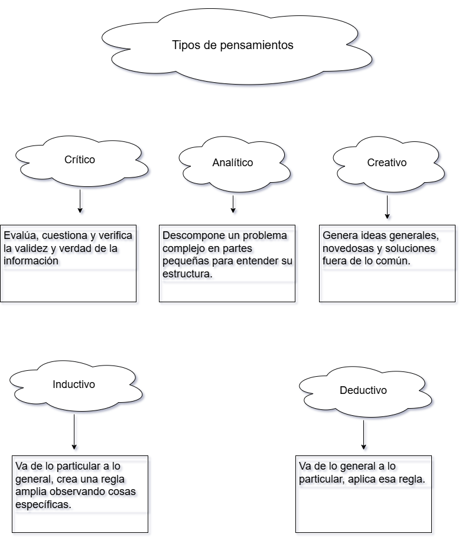

Los procesos cognitivos
El Pensamiento
¿Qué es el pensamiento?
Es la capacidad y el proceso mental x el cual organizamos, donde formamos conceptos, información, resolvemos problemas y tomamos decisiones.
Actividad:
Hacer un esquema sobre los tipos de pensamientos.
Pensamiento crítico, analítico, creativo, inductiv y el deductivo.
¿Qué es el pensamiento filosófico?

¿Pensamiento filosófico?
Es la reflexión profunda y racional sobre las interrogantes fundamentales de la existencia, como la verdad y el sentido de lal vida. Se caracteriza por ir a la raíz de las cosas, cuestiona los prejuicios y busca una compresnión integral de la realidad. Su pnketovp mp es dar ima respuesta definitiva sino enseñarnos a decidir y a pensar por nosotros mismos.
Habilidades de aprendizaje
Son un conjunto de capacidades cognitivas y metacognitivas, sociales, emocionales que permiten adquirir, procesar y aplicar conocimientos de manera asertiva, se divide en 4 habilidades importantes:
- Habilidades cognitivas: Se base en el aprendizaje através de las experiencias. Como por ejemplo: captar, prestar atención, la memorización y el razonamiento.
- Habilidades metacognitivas: Son los procesos de aprendizaje que nos ayuda a aprender para después planificar, analizar, autoevaluar, mentalizar todo lo aprendido.
- Habilidades innovación: Son las herramientas cognitivas necesarias paragenerar ideas originales y soluniones distintas.
- Habilidades Socioemocionales: Son las capacidades que permiten gestionar las emociones propias y colaborar con los demás.
Actividad: Hacer habilidades de innovación y habilidades Socioemocionales,
La bandera del Perú
Primera bandera: Fue creada en 1820 por el general Don José de San Martín en Pisco, tençia líneas diagonales rojas y blancas con un sol y montañas al centro.
Segunda bandera: Decretada en 1822 de marzo por José Bernardo de Tagle (Torre Tagle) con tres franjas horizontales(rojo, blanco y rojo) y un ssol en el medio.
Tercera bandera: En mayo de 1822 el mismo Torre Tagle modificó el diseño debido a que las franjas horizaontales se confundiían a lo lejos con la bandera española, cambió las franjas a la forma vertical.
Bandera actual: 1825/1950 Bolívar mantuvo las franjas verticales y cambió el sol por el escudo nacional. Mas adelante se retiró el escudo del centro para crear la bandera de uso civil actual.
Las emociones y metas personales
La emociones son válidas y fundamentales en la b-usqueda de muestras metas.
Las emociones pueden hacer que nuestras metas sean el impulso al éxito(positivos y negativos)
Las metas personales son los fines a los que se dirigen las acciones y los deseos de una persona en un tiempo determinado.
Actividad:
¿Cuál es la importancia de las metas personales?
através de un esquema definir las características de la metas personales y exponerlo en papelote.
Las Metas personales son importantes porque brinda direcciób y propçosito a la vida, sirven como fuente de motivación, permite medir el progreso, impulsan el crecimiento personal, el desafiarnos de salir de nuestra zona de confort y facilitar la toma de decisiones más enfocadas hacer lo que deseamos lograr.